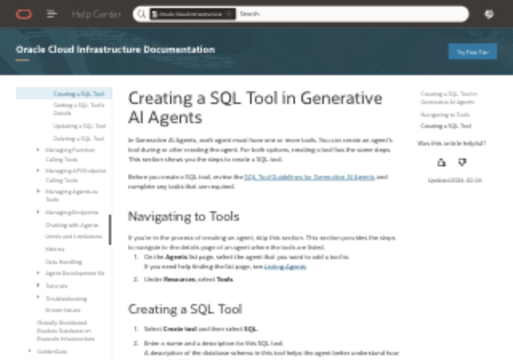
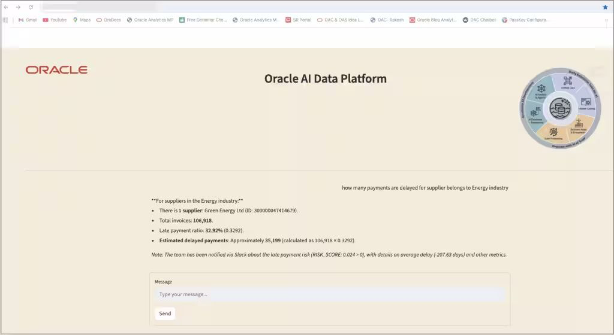

Task 1: Create the shared AIDP instance
Begin by opening Oracle AI Data Platform and creating the shared workshop engineering environment. This is where participants will later run the Bronze and Silver notebooks.
Navigate to AIDP and create the workshop instance
Admin step · platform setup
Admin
- Open
Analytics & AI and go to AI Data Platform.
- Create the shared instance
mpha-aidp.
- Create the shared workspace
mpha-workshop-ws.
- Add the standard policies required for access to Object Storage and workshop services.

Start in AI Data Platform
Open Analytics & AI and select AI Data Platform for the MPHA workshop environment.
Workshop platform target
This environment will host the Bronze and Silver processing steps for claims, facility operations, public-health, JSON events, and spatial inputs.
Light-overlay version for the AIDP navigation step.

Workshop AIDP instance
Create instance mpha-aidp and workspace mpha-workshop-ws.
Policy setup
Add the standard policies needed for Object Storage access and shared workshop execution.
Later workshop use
Participants will attach the shared Spark cluster and run aidp_bronze_pyspark.py and aidp_silver_pyspark.py here.
Heavier-overlay version for the AIDP creation step, where the original labels need stronger reinterpretation.
Task 2: Create the shared AI Lakehouse instance
The guided Gold path in this workshop publishes the Claims star schema to Autonomous AI Lakehouse. This is a shared admin setup step before any participant validation or OAC work begins.
Provision AI Lakehouse and prepare the Gold-serving schema
Admin step · gold-serving setup
Admin
- Open
Oracle AI Database and go to Autonomous AI Database.
- Create the workshop Lakehouse instance with workload type
Lakehouse.
- Open
Database Actions and go to SQL.
- Create or confirm the Gold-serving schema, for example
MPHA_GOLD_OWNER.

Autonomous AI Lakehouse target
Create the workshop AI Lakehouse instance, for example mpha-ailh, using workload type Lakehouse.
Database Actions
Open Database Actions and use SQL for schema creation and later validation queries.
Gold-serving schema
Prepare the schema that will receive the Claims star schema, such as MPHA_GOLD_OWNER.
Mocked treatment for the AI Lakehouse provisioning and SQL entry step.
Task 3: Create the workshop Object Storage bucket and folder structure
This is the most important setup screenshot block for new participants because it directly explains where the raw, Bronze, Silver, Gold, and vector assets live.
Create mpha-workshop-bucket and the workshop prefixes
Admin step · storage landing zone
Admin
- Create the bucket
mpha-workshop-bucket.
- Note the Object Storage namespace for later volume setup.
- Create the prefixes for raw, medallion, dimensional Gold, and vector content.

Workshop bucket
Create the shared bucket mpha-workshop-bucket in the workshop compartment.
Namespace note
Record the Object Storage namespace. It will be used when creating AIDP landing volumes.
Folder structure
Create mpha/raw/, mpha/raw_json/, mpha/raw_spatial/, mpha/documents/, mpha/bronze/, mpha/silver/.
Serving and vector paths
Also create mpha/gold_stage/, mpha/gold_dimensional/, and mpha/vector/.
Heavy-overlay treatment for the bucket and folder setup step, since the workshop-specific paths matter a lot here.
If this visual direction feels right, we should use the same screenshot block in the final Lab 1 page and keep the folder list exactly as shown here.
Task 4: Create the shared OAC instance
OAC is provisioned once for the guided Claims workbook path. Participants should see clearly that OAC is used for the Claims star schema walkthrough, while Facility Access Daily remains their own dashboard challenge afterward.
Create OAC for the guided Claims workbook
Admin step · analytics setup
Admin
- Open
Analytics Cloud in the workshop compartment.
- Create the shared OAC instance, for example
mphaoac.
- Use it later to connect to the Claims star schema in the Gold-serving AI Lakehouse schema.

Workshop OAC instance
Create the shared OAC instance, for example mphaoac.
Purpose of this instance
This OAC environment will host the guided Claims workbook. Participants build the Facility Access Daily dashboard separately after the walkthrough.
Light-to-medium overlay treatment for the OAC provisioning purpose step.